컴퓨터그래픽스운용기능사 (2009-09-27 기출문제)
1과목: 산업디자인 일반
1. 우아, 매력, 복잡의 상징으로, 여성적인 섬세함과 동적인 표정을 나타내는 디자인 요소로 가장 적합한 것은?
- 사선
- 곡선
- 절선
- 직선
(정답률: 92%)

2. 19세기 미술공예운동(Arts & Crafts Movement)에 관한 설명 중 틀린 것은?
- 대량생산제품에 대한 찬성
- 양산제품에서의 품질문제 제기
- 수작업으로 돌아가자는 주장
- 만드는 즐거움과 예술적 가치 주장
(정답률: 79%)
3. 다음 중 대상의 빛과 소리를 신호로 바꾸어 전파를 이용해 원거리로 전달한 후 다시 전기 신호로 바꾸어 영상과 소리로 재현하는 것은?
- Blu-ray, 텔레비젼 방송
- DVD, VTR
- 텔레비젼 방송, DMB
- 텔레비젼 방송, VTR
(정답률: 81%)
4. 물체의 원근감이나 중량감, 실제감을 강하게 느끼게 하는 표현 요소는?
- 점
- 선
- 면
- 명암
(정답률: 83%)
5. 디자인에서 사용자 편의에 중점을 둔 인간공학적(Ergonomics) 요소란?
- 규모가 비교적 작은 일상 용품을 계획하는 것
- 아름답고 단순한 디자인 방법을 찾는 것
- 개인의 취향보다는 대중의 미의식에 맞추는 것
- 인간의 생리적, 심리적 특성에 맞도록 디자인 하는 것
(정답률: 83%)
6. 소비자 행동에 영향을 미치는 요인과 가장 거리가 먼 것은?
- 문화적 요인
- 사회적 요인
- 개인적 요인
- 도덕적 요인
(정답률: 84%)
7. 다음 중 이념적 형의 설명과 거리가 먼 것은?
- 이동하는 선의 자취가 면을 이룬다.
- 선은 면의 한계, 교차에서 볼 수 있다.
- 그 자체만으로도 조형이 될 수 있다.
- 개념적 요소로서 직접 지각하여 얻지 못하는 형태이다.
(정답률: 53%)
8. DM(Direct Mail)광고라고 볼 수 없는 것은?
- 폴더(Folder)
- 리플렛(Leaflet)
- 포스터(Poster)
- 카탈로그(Catalogue)
(정답률: 65%)
9. 모델링(Modeling)의 종류 중 제품의 성능과 형태가 실제 생산품과 똑같으며 종합적인 성능 실험과 광고모델, 전시회 출품에까지 사용되어지는 것은?
- 제시 모델
- 연구 모델
- 제작 모델
- 실험 모델
(정답률: 58%)
10. 실내 디자인에 드는 비용을 최소화 하는 방안으로 틀린 것은?
- 시설비를 줄인다.
- 천장이나 벽면에는 요철을 적게 한다.
- 표준화된 치수의 제품과 규격화된 기성품을 사용한다.
- 실내 디자인의 효과를 높이기 위해서는 구입비와 유지관리비를 최대한 많이 책정한다.
(정답률: 85%)
11. 마케팅 관리자가 마케팅 활동을 수행하기 위하여 쓸 수 있는 도구인 마케팅 믹스(Marketing mix)가 아닌 것은?
- 제품 정책
- 유통 정책
- 가격 정책
- 소비 정책
(정답률: 67%)
12. 포장의 역할과 가장 거리가 먼 것은?
- 운반의 편리함을 만든다.
- 상품을 보호한다.
- 객관화, 보편화하는 수단이다.
- 기능성, 심미성을 갖고 있다.
(정답률: 74%)
13. 면은 공간을 구성하는 단위이며, 공간 효과를 나타내는 중요한 요소이다. 다음 중 적극적인 면(Positive Plane)은 어느 것인가?
- 점의 밀집
- 선의 집합
- 점의 확대
- 입체화된 선
(정답률: 66%)
14. 디자인 작업 중 이미지를 포착하기 위한 목적으로 표현하는 기법은?
- 아이디어 스케치
- 렌더링
- 제도
- 모델링
(정답률: 78%)
15. 게슈탈트 요인 중 벌어진 도형을 완결시켜 보려는 경향을 갖는 성질은?
- 근접성의 법칙
- 방향성의 법칙
- 유사성의 법칙
- 폐쇄성의 법칙
(정답률: 72%)
16. 편집 디자인에 관한 설명 중 잘못된 것은?
- 소형 인쇄물을 시각적으로 구성
- 소비자의 상품구매를 위한 기능
- 시각 커뮤니케이션 표현에 중점
- 1920년대 미국에서 사용되기 시작
(정답률: 61%)
17. 다음 중 실내디자인의 대상 공간이 아닌 것은?
- 도서관
- 사무실
- 도시조경
- 상점
(정답률: 92%)
18. 디자인 표현 기법 중 최종 디자인을 결정하려는 표현 전달의 단계로 실물과 같이 충실하게 표현하는 것은?
- 렌더링
- 정밀묘사
- 투시도
- 정투상도
(정답률: 78%)
19. 실내에서 감각적인 효과를 가장 먼저 주는 요소는?
- 색채
- 질감
- 형태
- 무늬
(정답률: 78%)
20. 자본주의와 과시적 소비가 지나치게 밀착하는 현상에 대한 저항으로, 좀 더 환경적이고 인간적인 디자인 철학을 제시한 조형 운동은?
- 아르누보
- 독일공작연맹
- 미술공예운동
- 반디자인 운동
(정답률: 57%)
2과목: 색채 및 도법
21. 부분 단면도에 대한 설명 중 틀린 것은?
- 일부분의 단면을 필요로 할 때 사용한다.
- 전체를 절단하면 필요한 부분의 외형을 표시할 수 없을 경우에 쓰인다.
- 파단한 곳을 불규칙한 가는 실선으로 표시한다.
- 대칭 중심선의 1/4을 단면으로 표시하고, 단면하지 않은 쪽의 숨은선은 생략한다.
(정답률: 54%)
22. 척도에 대한 설명 중 틀린 것은?
- 물체의 실제 크기와 도면에서의 크기비율을 말한다.
- 실물보다 축소하여 그리는 것을 축척이라고 한다.
- 실물과 같은 크기로 그리는 것은 현척이라고 한다.
- 실물보다 2배로 확대한 것을 등척이라고 한다.
(정답률: 79%)
23. 다음 평면도법 중 '같은 면적 그리기'가 아닌 것은?
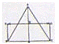
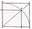
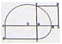
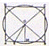
(정답률: 62%)
24. 다음 중 거리감이 불확실하고 입체감이 없는 평면적인 색은?
- 면색
- 표면색
- 공간색
- 경영색
(정답률: 58%)
25. 투시도의 부호 중 시 중심을 나타내는 기호는?
- FL
- PP
- GL
- CV
(정답률: 57%)
26. 친애, 젊음, 신선 등을 상징하는 색은?
- 주황
- 노랑
- 연두
- 청자
(정답률: 67%)
27. 장축과 단축이 주어질 때 타원을 그릴 수 있는 방법이 아닌 것은?
- 직접법
- 4중심법
- 대,소부원법
- 평행사변형법
(정답률: 54%)
28. 동양의 전통적 색채는 음/양의 역학적 원리에 근거를 두고 있다. 다음 색 중 음의 색은?
- 빨강
- 노랑
- 파랑
- 주황
(정답률: 78%)
29. 오스트발트의 표색계는 누구의 이론을 기본으로 하는가?
- 멘셀의 색상환
- 영의 3원색설
- 헤링의 4원색설
- 헬름홀즈의 색각
(정답률: 52%)
30. 다음 중 식욕을 촉진하는 음식점 색채계획으로 적합한 것은?
- 회색 계열
- 핑크색 계열
- 파란색 계열
- 초록색 계열
(정답률: 70%)
31. 다음 그림이 나타내는 투시도법의 원리는?
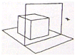
- 1소점법
- 2소점법
- 3소점법
- 유각 투시도법
(정답률: 48%)
32. 보색이 아닌 색을 서로 배색시켰을 때 반대색 방향으로 변해보이는 대비효과는?
- 명도대비
- 색상대비
- 보색대비
- 계시대비
(정답률: 50%)
33. 색을 연상하기 쉬운 관용색명을 사용하여 제품의 색 이름을 지으려고 한다. 적합하지 않은 것은?
- 라이트 핑크(light pink)
- 피콕블루(peacock blue)
- 에메랄드그린(emerald green)
- 반다이크 브라운(Vandyke brown)
(정답률: 61%)
34. 색의 3속성에 대한 설명으로 옳지 않은 것은?
- 색의 3속성은 색상, 명도, 채도이다.
- 모든 색상은 2가지 색상이 혼합된 것처럼 지각된다.
- 시감 반사율의 고저에 따라 명도가 달라진다.
- 진한색과 연한색, 흐린색과 맑은색 등은 모두 채도의 높고 낮음을 가리키는 말이다.
(정답률: 64%)
35. T자와 삼각자를 이용한 선을 그을 때의 방법이 옳게 짝지어진 것은? (단, 수직선은 삼각자를 이용한 좌측선 긋기)
- 수평선-좌에서 우로, 수직선-아래에서 위로
- 수평선-우에서 좌로, 수직선-위에서 아래로
- 수평선-좌에서 우로, 수직선-위에서 아래로
- 수평선-우에서 좌로, 수직선-아래에서 위로
(정답률: 51%)
36. 가법혼색의 3원색과 그 혼합색에 관한 도표이다. A부분에 적합한 색상은?
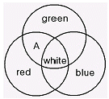
- Yellow
- Cyan
- Magenta
- Purple
(정답률: 78%)
37. 먼셀 표색계의 기본 5색이 아닌 것은?
- 빨강(Red)
- 녹색(Green)
- 보라(Magenta)
- 주황(Orange)
(정답률: 76%)
38. 색의 3속성 가운데 중량감에 가장 큰 영향을 미치는 것은?
- 색조
- 명도
- 채도
- 색상
(정답률: 75%)
39. 아래의 정면도를 기준으로 3각 도법에 의한 평면도 (왼쪽)와 측면도(오른쪽)가 맞는 것은?
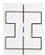
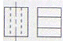
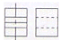
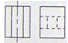
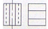
(정답률: 65%)
40. 다음 중 같은 색상에서 큰 면적의 색은 작은 면적의 색보다 화려하고 박력이 있어 보이는 것과 관련 있는 것은?
- 색상대비
- 도지반전
- 매스효과
- 소면적 제3색각 효과
(정답률: 58%)
3과목: 디자인 재료
41. 종이를 만들기 위한 가공법 중 염료나 안료의 착색은 다음의 어느 공정사이에서 이루어지는가?
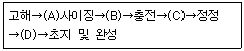
- A
- B
- C
- D
(정답률: 55%)
42. 다음 중 판지의 필요조건이 아닌 것은?
- 판지는 평활도가 좋아야 한다.
- 판지는 흡유성이 좋아야 인쇄효과가 좋다.
- 판지는 재질의 특성상 두께가 균일하지 않아도 된다.
- 판지는 표면 강도가 좋아야 벗겨지지 않고 접착효과가 좋다.
(정답률: 78%)
43. 물을 사용하여 혼합할 수 있으나, 건조 후 물에 지워지지 않는 채색재료는?
- 수채화물감
- 크레파스
- 아크릴 컬러
- 파스텔
(정답률: 79%)
44. 열경화성 수지에 대한 설명으로 틀린 것은?
- 열에 안정적이다.
- 거의 전부가 반투명 또는 불투명이다.
- 압축, 적층 성형 등의 가공법에 의하기 때문에 비능률적이다.
- 성형시 화학적 변화를 일으키지 않기 때문에 재사용이 가능하다.
(정답률: 57%)
45. 도료 성분 중 용제의 가장 중요한 역할은?
- 건조 속도의 도막의 평활성을 부여한다.
- 여러 색상을 나타내고 내구력을 증가시킨다.
- 도료의 성능을 좌우한다.
- 도료의 성질을 조정한다.
(정답률: 49%)
46. 다음 중 석유화학 산업의 발달로 나타난 재료는?
- 플라스틱
- 알루미늄
- 유리
- 도자기
(정답률: 76%)
47. 1250-1450℃로 소성한 것으로 투광성이 있고 매우 단단하며 경도 및 강도가 점토 제품 중 가장 크고 손끝으로 두드리면 가벼운 청음을 내는 것은?
- 토기
- 석기
- 도기
- 자기
(정답률: 66%)
48. 벤토나이트(Bentonite) 의 설명 중 틀린 것은?
- 화강암이 비, 바람, 기타 화학 반응에 의해 분해되어 만들어진 것이다.
- 입자가 작은 점토로 소량의 사용은 가소성을 높여 준다.
- 물을 가하면 크기가 부풀어 오르므로 팽유토(膨由土)라고도 한다.
- 유약의 침전을 막아주고 접착력을 높여 주는데 사용하나 소량의 3%이내로 사용한다.
(정답률: 40%)
4과목: 컴퓨터 그래픽스
49. RGB 모드 색상에 관한 설명 중 틀린 것은?
- 혼합될수록 어두워지는 감산혼합이다.
- 영상 이미지 또는 TV 등의 컬러 처리를 수행한다.
- 빛의 3원색이라고도 한다.
- 최대의 강도로 3가지 색의 빛이 겹칠 때 흰색으로 보인다.
(정답률: 75%)
50. 셀 애니메이션 작업시, 오브젝트 사이에서 변형되는 단계의 중간 프레임을 제작하는 보간법을 무엇이라 하는가?
- 모핑
- 트위닝
- 로토스코핑
- 사이클링
(정답률: 55%)
51. 다음 컴퓨터그래픽 시스템 구성 중 출력 장치는?
- 키보드
- 플로터
- 스캐너
- 디지타이저
(정답률: 72%)
52. 블러링(bluring)의 효과를 옳게 설명한 것은?
- 이미지를 흐리게 한다.
- 이미지를 복사한다.
- 이미지의 색을 보색으로 변경한다.
- 이미지의 콘트라스트를 높인다.
(정답률: 86%)
53. 투명한 도면 같은 것으로, 여러 장 겹쳐서 하나의 이미지로 만들어 수정작업을 용이하게 하는 기능은?
- 채널(Channel)
- 패스(Path)
- 레이어(Layer)
- 스와치(Swatches)
(정답률: 81%)
54. 다음 중 레지스터(Register)의 설명으로 옳은 것은?
- 마이크로프로세서가 처리하기 위한 자료나 수행될 명령의 주소를 일시적으로 저장하는데 사용되는 고속의 기억회로이다.
- 컴퓨터 시스템에서 각 부품들 사이에 데이터를 전송하는 통로이다.
- 기록된 데이터를 단지 읽을 수만 있는 메모리로, 운영체제처럼 컴퓨터를 사용하는데 꼭 필요한 내용을 담고 있다.
- 스크린 화상을 표시하기 위하여 필요한 정보를 읽고 쓸 수 있는 비디오 램 등을 탑재한 보드를 말한다.
(정답률: 60%)
55. 다음 중 고라우드(Gouraud) 셰이딩 보다 부드럽고 좋은 질의 화상을 얻을 수 있으며, 부드러운 곡선 표면의 물체에 적용하는 셰이딩 기법은?
- 플랫 셰이딩(Flat Shading)
- 레이 트레이싱(Ray Shading)
- 퐁 셰이딩(Phong Shading)
- 리플렉션(Reflection)
(정답률: 64%)
56. 다음 컴퓨터 소자의 구별 중 제2세대에 해당되는 것은?
- 진공관
- IC
- 트랜지스터
- VLSI
(정답률: 79%)
57. 다음 중 포토샵 프로그램의 Trap 명령이 적용될 수 있는 이미지 색상 모드는?
- RGB
- CMYK
- Gray Scale
- Duotone
(정답률: 41%)
58. 돌기를 형성한 것 같이 표면에 기복이 있는 질감을 나타내는 방법은?
- 범프 매핑(Bump Mapping)
- 픽쳐 매핑(Picture Mapping)
- 스팩큘라 매핑(Specular Mapping)
- 리플렉션 매핑(Reflection Mapping)
(정답률: 65%)
59. 다음 설명 중 틀린 것은?
- 비트(Bit)는 정보의 가장 작은 양이며 컴퓨터의 정보를 처리할 뿐만 아니라 정보를 표현하기 위해서도 사용된다.
- 1바이트(Byte)는 8비트(Bit)이다.
- 1킬로바이트(KB)는 1024바이트(Byte)이다.
- 1기가바이트(Giga Byte)는 1024KB이다.
(정답률: 64%)
60. 포토샵 작업 중 Magic Wand툴로 여러 부분을 선택한 후 지금 선택한 색과 같은 색 또는 유사색으로 된 이미지의 부분을 추가로 선택 하고자 할 때 어떤 명령을 실행시켜야 하는가?
- All
- Inverse
- Similar
- Feather
(정답률: 58%)